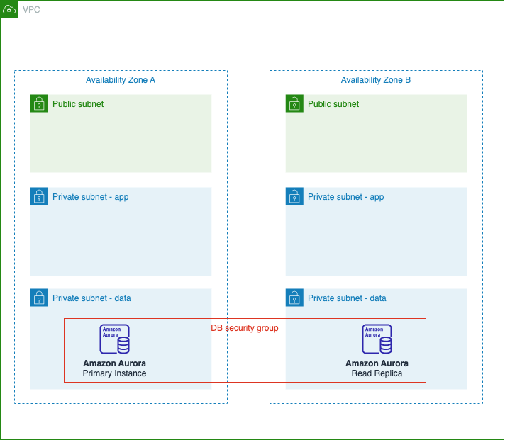
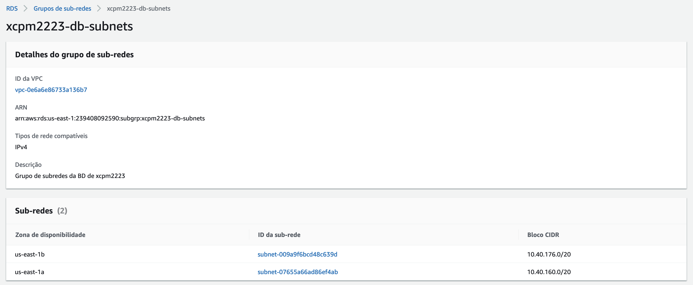
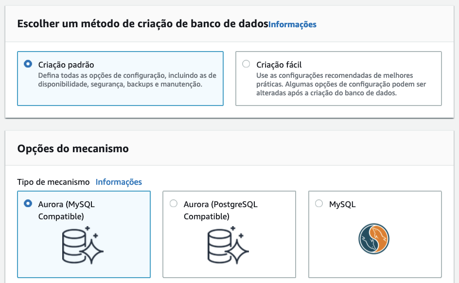
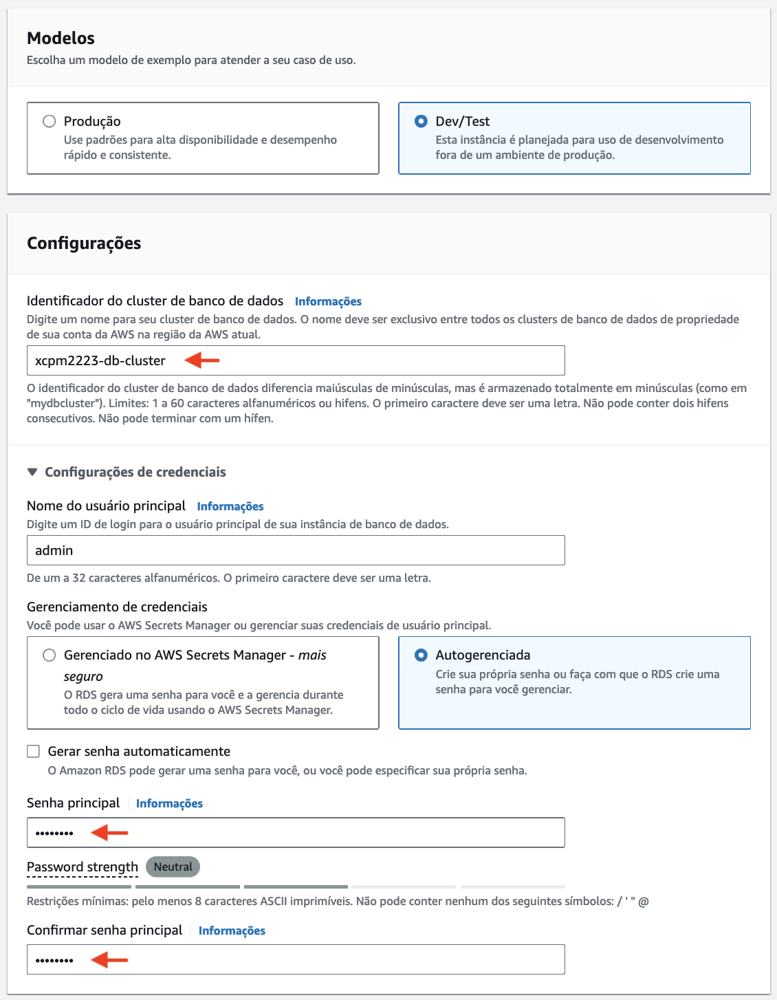
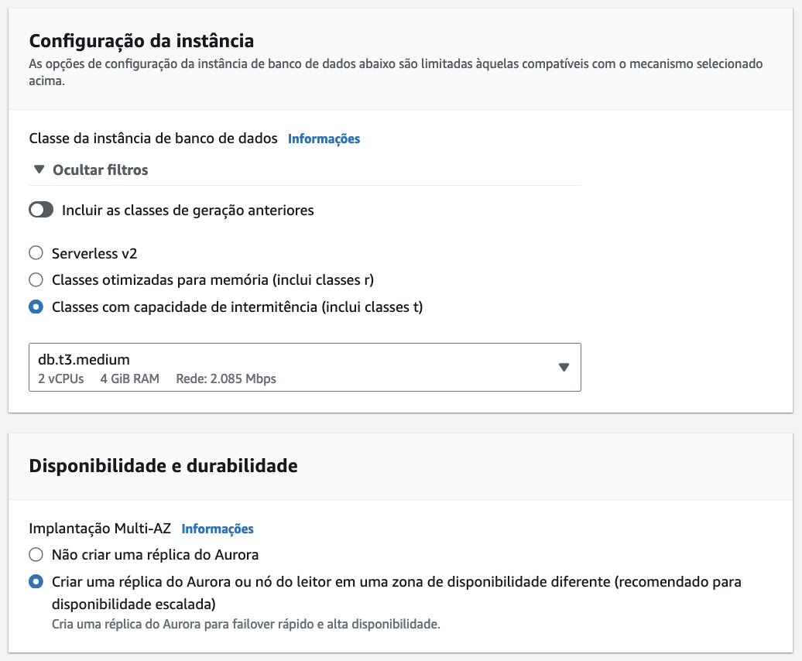
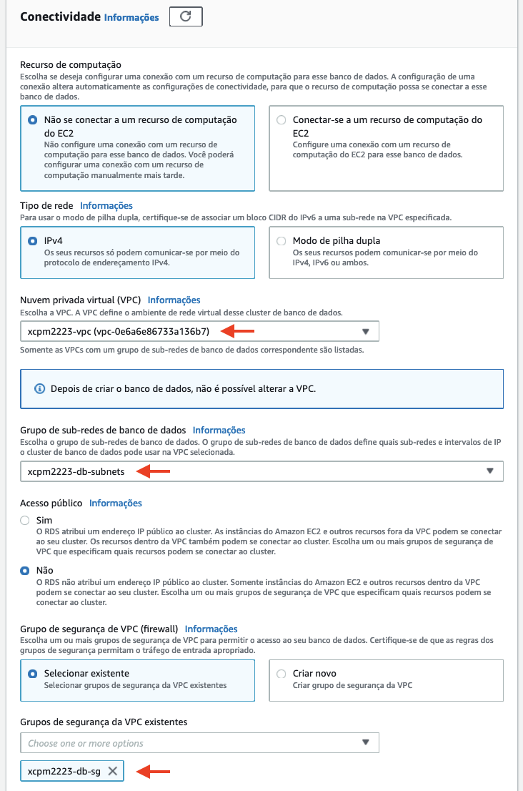
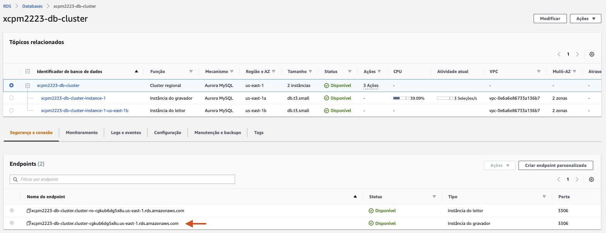

Paso 3: Configuración da capa de datos
O seguinte paso vai ser a configuración da capa de datos da arquitectura. Vamos utilizar un cluster de BD Aurora despregado nas dúas AZ da nosa VPC para proporcionar alta dispoñibilidade nesta capa. En concreto, vamos configurar o seguinte:
- Un grupo de subredes para o despregamento do cluster de BD Aurora.
- O cluster de BD Aurora en configuración multi-AZ.
 Imaxe: compoñentes da capa de datos.
Crea o grupo de subredes
Os grupos de subredes definen que subredes dunha VPC serán usadas para despregar a BD. Un grupo de subredes ten que ter subredes nun mínimo de dúas zonas de dispoñibilidade. Para crealos fai o seguinte:
- Desde a consola de AWS, accede ao servizo RDS.
- No menú do servizo RDS, escolle a opción: Grupos de subredes.
-
Escolle a opción para crear un novo grupo de subrede e indica as opcións seguintes:
- Nome: dalle un nome ao grupo. Lembra poñer as tuas iniciais seguidas do curso académico, p.e. xcpm2223-db-subnets.
- Descrición: pon unha descrición para o grupo.
- VPC: escolle a VPC que creaches para a arquitectura.
- Zonas de dispoñibilidade: escolle as dúas AZ nas que están as subredes privadas que se crearon como parte da VPC.
- Subredes: escolle as dúas subredes privadas, de AZ distintas, que se usarán para a capa de datos da nosa arquitectura.
 Imaxe: configuración dos grupos de subrede.
Crea o cluster de BD Aurora
Antes de crear o cluster, consulta a documentación de AWS para coñecer os conceptos básicos sobre os clústeres de BD Aurora. Para crear o cluster fai o seguinte:
- No menú do servizo RDS, escolle a opción: Bases de datos.
-
Escolle a opción para crear unha nova base de datos e indica as opcións seguintes:
- Método de creación: Creación estándar
- Tipo de motor: Aurora (compatible con MySQL)
 Imaxe: configuración do método e tipo da BD.
- Modelo: Dev/Test
- Configuracións:
- Dalle un nome ao cluster. Lembra poñer as tuas iniciais seguidas do curso académico, p.e. xcpm2223-db-cluster.
- Contrasinal principal: insire unha seña para o usuario admin da BD.
 Imaxe: configuración do modelo e configuracións do clúster de BD.
- Configuración da instancia: escolle unha instancia de tipo db.t3.small (para que apareza na listaxe tes que activar a opción para ver as instancias da clase t).
- Dispoñibilidade: activa a opción para crear unha réplica de lectura nunha AZ diferente.
 Imaxe: configuración da instancia e dispoñibilidade do clúster de BD.
- Conectividade: escolle a VPC que creaches para a arquitectura, o grupo de subredes que se creou anteriormente e o grupo de seguridade da capa de datos. Asegúrate de que o acceso público ao cluster estea desactivado.
 Imaxe: configuración da conectividade do clúster de BD.
- Monitoramento: desactiva o monitoramento avanzado.
- Configuración adicional: desactiva o cifrado da BD e a actualización automática de versións secundarias.
Nota
Non aceptes ningún dos add-ons suxeridos durante a creación do cluster.
Unha vez creado o cluster, haberá dúas instancias, unha de escritura e outra de lectura, distribuidas entre as subredes do grupo de subredes que configuramos anteriormente.
Importante
Copia o endpoint da instancia de escritura, xa que o precisaremos despois para configurar o acceso á BD desde a capa de aplicación.
 Imaxe: propiedades do cluster de BD Aurora.
Nota
Para que o clúster non xere custos innecesarios cando non o esteas usando, podes paralo usando a opción Interromper temporalmente do menú de accións. Isto fai que se paren as instancias do clúster durante un período máximo de 7 días. Se non se inician antes manualmente, pasado ese período o laboratorio as iniciará automaticamente.